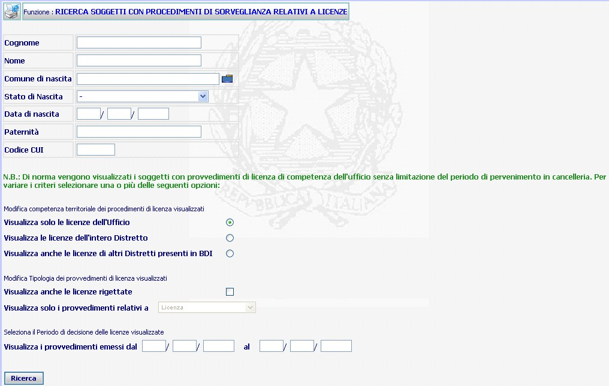

RICERCA SOGGETTI CON PROCEDIMENTO DI SORVEGLIANZA RELATIVI A LICENZE: La funzione consente di operare ricerche di procedimenti SIUS, relativi a licenze, iscritti presso gli Uffici di Sorveglianza del Distretto di appartenenza a carico di un soggetto attraverso l'indicazione dei dati anagrafici dello stesso.
LE MASCHERE VIDEO
La funzione viene realizzata attraverso la maschera seguente in cui viene richiesto di compilare, integralmente o in maniera parziale, uno o più campi presenti nella maschera

COME FARE PER ...
| Per ricercare i procedimenti di sorveglianza relativi a licenze a carico di un soggetto iscritti nel proprio ufficio l'utente deve: |
Introdurre nei relativi campi (non necessariamente in tutti) il dato richiesto o una parte dello stesso (ad esempio le prime lettere del cognome o del nome). Il sistema, inoltre, riporta già preselezionato il bottone per effettuare una ricerca mirata visualizzando le licenze dell'Ufficio
Confermare i dati
inseriti nella maschera agendo sul bottone
 . Se
esiste uno o più procedimenti relativi a licenze a carico del soggetto (o dei soggetti)
individuato con i campi compilati, allora viene visualizzata la maschera di
elenco soggetti con
procedimenti di sorveglianza relativi a licenze.
. Se
esiste uno o più procedimenti relativi a licenze a carico del soggetto (o dei soggetti)
individuato con i campi compilati, allora viene visualizzata la maschera di
elenco soggetti con
procedimenti di sorveglianza relativi a licenze.
| Per estendere la ricerca anche ai procedimenti iscritti nell'intero Distretto l'utente deve: |
Effettuare la ricerca con le modalità descritte ai punti precedenti, selezionando però la voce
- Confermare i dati inseriti nella maschera agendo sul bottone
Se esiste uno o più procedimenti a carico del soggetto (o dei soggetti) individuato con i campi compilati, allora viene visualizzata la maschera di elenco soggetti con procedimenti di sorveglianza relativi a licenze.
| Per estendere la ricerca anche ai procedimenti provenienti dagli altri Distretti, vale a dire quei procedimenti Sius relativi alle licenze iscritti da altri Uds e legati a procedimenti Siep provenienti da altre BDI ed importati nella propria l'utente deve: |
Effettuare la ricerca con le modalità descritte ai punti precedenti, selezionando però la voce
- Confermare i dati inseriti nella maschera agendo sul bottone
| Per ricercare tutti i procedimenti, relativi alle licenze, iscritti nel proprio ufficio a carico di un soggetto comprese quelle rigettate, l'utente deve: |
Introdurre nei relativi campi (non necessariamente in tutti) il dato richiesto o una parte dello stesso (ad esempio le prime lettere del cognome o del nome).
Selezionare con un flag la voce
- Confermare i dati inseriti nella maschera agendo sul bottone
| Per limitare la ricerca ad un determinato lasso temporale l'utente deve: |
Effettuare la ricerca con le modalità descritte ai punti precedenti
Inserire l'intervallo temporale nei relativi campi
- Confermare i dati inseriti nella maschera agendo sul bottone
N.B. Il procedimento si intende definito solo dopo l'avvenuto deposito del relativo provvedimento (a prescindere dall'avvenuta validazione dello stesso) ovvero allorquando venga chiuso con una diversa modalità di definizione (es. definizione manuale, unificazione, ecc.):
CAMPI
I dati attraverso i quali è possibile effettuare la ricerca sono i seguenti:
| Cognome | Campo nel quale va inserito il cognome (o una parte del cognome) del soggetto da ricercare |
| Nome | Campo nel quale va inserito il nome (o una parte del nome) del soggetto da ricercare |
| Comune di nascita |
Campo nel quale va inserito il Comune di nascita (digitandolo per intero
o selezionandolo attraverso l'apposito
Pulsante di Ricerca da Lista Predefinita |
| Stato nascita | Campo nel quale va inserito lo Stato di nascita (da selezionare attraverso la relativa tendina) |
| Data di nascita | Campo nel quale va inserita la data di nascita del soggetto da ricercare |
| Paternità | Campo nel quale va inserita la paternità del soggetto da ricercare. |
| Codice CUI | Campo nel quale va inserito l'eventuale codice CUI assegnato al soggetto da ricercare. |
| Visualizza solo i permessi dell'Ufficio | Sistema propone il bottone già selezionato per una ricerca del/i procedimenti di sorveglianza relativi a permessi a carico di un soggetto limitata al proprio ufficio. |
| Visualizza i permessi dell'intero distretto | Selezionare il bottone in corrispondenza per effettuare una ricerca mirata all'intero distretto del/i procedimenti di sorveglianza relativi a permessi a carico di un soggetto |
| Visualizza anche i permessi di altri Distretti presenti in BDI | Selezionare il bottone in corrispondenza della voce per estendere la ricerca anche ai procedimenti provenienti dagli altri Distretti, vale a dire quei procedimenti Sius iscritti da altri Uds e legati a procedimenti Siep provenienti da altre BDI ed importati |
| Visualizza i procedimenti pervenuti in cancelleria dal ... al ... | Campi nei quali va inserito l'intervallo temporale al quale la ricerca va riferita. |
N.B. Maggiore è la quantità dei dati inseriti dall'operatore che effettua la ricerca, maggiormente ristretta è la ricerca.
PULSANTI
Oltre al pulsante
 di stampa del contesto (videata)
di stampa del contesto (videata)
|
PULSANTE |
DESCRIZIONE |
|
|
A fronte di tale comando, il sistema visualizza la lista predefinita. |
BOTTONI
Oltre ai comandi funzionali relativi al menù verticale sono presenti i seguenti comandi:
|
COMANDI |
DESCRIZIONE |
|
|
A fronte di tale comando, il sistema dopo aver verificato la validità dei dati specificati, presenta la maschera di dettaglio del singolo procedimento ovvero, nel caso in cui più procedimenti rispondano ai criteri di ricerca impostati, presenta la lista degli atti trovati; |
CONTROLLI
A fronte della pressione
del bottone
 , il
sistema verifica che:
, il
sistema verifica che:
tutti i campi contenenti Pulsante di Ricerca da Lista Predefinita siano stati compilati correttamente
Esista uno o più procedimenti rispondenti ai canali di ricerca selezionati.
Se il sistema non troverà alcun procedimento rispondente ai criteri di ricerca impostati verrà visualizzato il seguente messaggio: